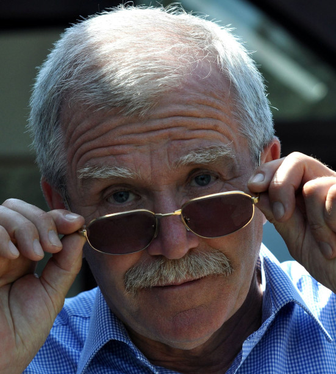

A Kárpáti malom rövid története
Levéltári adatok szerint a sopronbánfalvi Erdei malom, vagy Waldmühle valamikor a XVII-ik század közepén épült, a XVIII-ik század elején vásárolta meg korai felmenőm Mühl Lőrinc. Leszármazottai (valamennyien molnárok voltak) öt generáción keresztül őrölték a gabonát. A malom utolsó felújítását a mestergerendán olvasható dátum szerint 1837-ben végezte el ükapám Mühl Sámuel. A körjáratos malmok működtetése nehézkes volt. A folyamatos használat közben megkopott mázsás örlőköveket gyakran kellett "megvágni". Mozgatásuk nagy fizikai erőkifejtést igényelt. Az erőátviteli szerkezet fából készült fogait gyakran kellett cserélni, mindezt az ügyes kezű molnárok maguk végezték. Mühl Sámuelnek lánya született, akinek Tiefbrunner Károly műbádogossal kötött házasságát négy leánygyermekkel áldotta meg a Teremtő. Velük végleg megszakadt a molnár dinasztia, ettől kezdve a malmot bérlő molnárok üzemeltették.1949-ben a közelgő ,,kulák veszély" miatt felmondtak Balogh János molnárnak. Az épület ajtajára lakat került. Ennek volt köszönhető, hogy a malmot nem államosították, a benne lévő gépi berendezések teljes egészében megmaradtak. Az 1960-as évek végén az addigra teljesen leromlott, életveszélyessé vált épület együttest Dr. Kárpáti László (mivel a felújítás költségeit nem tudta fedezni) eladta azt Taródi Istvánnak.
Az új tulajdonos az épület lebontásából származó köveket az épülő várába kívánta beépíteni. A védett ipari műemlék 2008-ig várta sorsának jobbra fordulását, amikor is feleségem Dr. Gangl Teréz gyógyszerész születésnapomon, a malomépület visszavásárlásának lehetőségével ajándékozott meg. A minden részletre kiterjedő, Nemes András művészettörténész által elvégzett kutató feltárást követõen kezdődhetett el az épületegyüttes felújítása Józsa Dávid építész tervei alapján. A felújítás önerőből és az NKA (Nemzeti Kulturális Alap), valamint Sopron Önkormányzat anyagi támogatásával valósulhatott meg. A több száz éves, viszonylag épségben maradt malom gépészet Tamás Péter malomkutató és csapatának köszönhetően ismét életre kelt. Noha az eredeti felvízcsatorna már nem volt helyreállítható, a terepviszonyok lehetőségeit kihasználva egy víztározó kialakítására került sor. Ennek köszönhetően ismét foroghat a malom 5,2 m átmérőjű felülcsapott vízikereke.
A molnárok általában rendkívül tehetséges ezermesterek voltak. Az ügyes- bajos teendők mellett azonban nagy figyelmet fordítottak a munkahelyük kialakítására is. Érezni a szépség iránti igényt a számtalan apró díszítésben. Családunkban sokan rendelkeztek művészi érzékkel. Nagyapám Kárpáti Sándor zeneszerző volt, a kulturális élet számtalan szereplőjét ismerte. Sokszor esténként a malom kertjében lévő kis pavilonban összegyültek, és saját örömükre kamarazenéltek, felolvasásokat tartottak írásaikból. Ezt a szellemiséget szeretnénk a megújuló épületegyüttesbe is visszahozni. Kárpáti Sándor zenei hagyatékának feldolgozása megtörtént. A kézzel írott kottákat Dárdai Árpád, Uve Sheer és Mizsei Zoltán dolgozták fel, digitalizálva tették közkinccsé, elérhetővé az utókor számára. Munkájuknak köszönhető, hogy életműve teljes egészében ismertté válhat. Ránk hagyott ingóságai, bútorai, zongorája az épületben kialakított emlékszobában láthatók. Itt digitalizált zeneműveinek meghallgatására is lehetőség nyílik. Az épületegyüttes emeletén kialakított galériában kiállításokat rendezhetünk. Egy "Soproni Fotómúzeum” kialakítása is folyamatban van. az épület falai között. A Kárpáti Malom Sopronban, az Erdei malom köz 4.sz. alatt található.